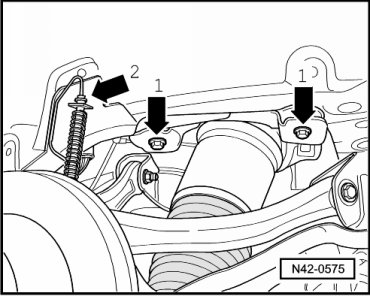
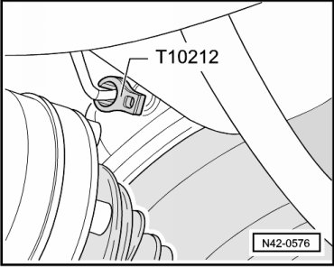
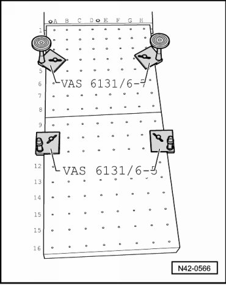
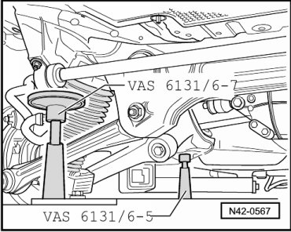
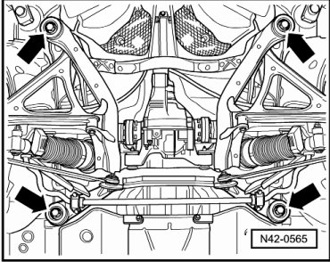
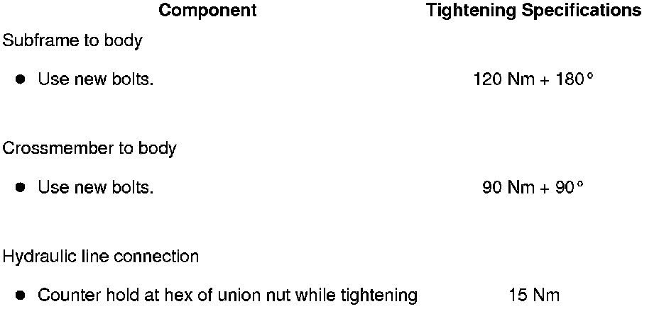

Subframe
Subframe
Special tools, testers and auxiliary items required
• Torque wrench (VAG 1332)
• Brake pedal actuator (VAG 1869/2)
• Scissor lift table (VAS 6131)
• Support (2x) (VAS 6131/6-5)
• Support (2x) (VAS 6131/6-7)
• Ring spanner insert AF 21 (T10212)
Removing
CAUTION!
Before starting work, stabilizer bars must be coupled in vehicles with separable stabilizer bars. Otherwise, there is the danger of injury caused by unintentional separation.
- Depressurize hydraulic system for separable stabilizer bars using the Vehicle diagnosis, testing and information system VAS 5051.
- Remove wheels.
- Remove rear part of exhaust system:
- Disconnect brake lines - arrow 2 -.

- Remove brake cables from rear axle.
- Disconnect all electrical wires from body to axle.
- Remove left and right air supply.

- Remove driveshaft from rear final drive and secure.
With separable Stabilizer Bar
- Remove left rear wheel housing liner.
- Disconnect both hydraulic lines - 1 - and electrical connection - 2 -.

Lines and wires must not be mixed up when connecting!
- Check whether color marking is present on front in driving direction. If no longer present, apply a new one.
- When loosening hydraulic lines, counter hold using open end wrench.
Continuation for All
- Thread both supports (VAS 6131/6-7) and (VAS 6131/6-5) on scissor lift table (VAS 6131).

- Support subframe using scissor lift table.

- Mark position of crossmember on body using felt-tip pen.
- Remove crossmember bolts - arrows 1 - on left and right.
- Remove bolts - arrows - for subframe.

- Lower scissor lift table slightly and disconnect ventilation line from final drive connecting nipple.
- Slowly lower subframe.
Installing
Installation is the reverse of removal, with special attention to the following:
- Tighten subframe using the old bolts. They have to be replaced with new bolts following wheel alignment.
- Tighten old bolts to specifications without additional tightening, while doing so.
- After installation, a vehicle alignment must be performed. Refer to --> [ Wheel Alignment ] Wheel Alignment.
- Adjust parking brake.
With Separable Stabilizer Bar
- Bleed separable stabilizer bar. Refer to --> [ Separable Stabilizer Bar, Bleeding ] Procedures.
Continuation for All
- Bleed brake system.
- Install wheels and tires. Refer to --> [ Wheel Bolts, Tightening Specification ] .
Tightening Specifications
